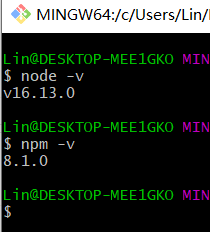
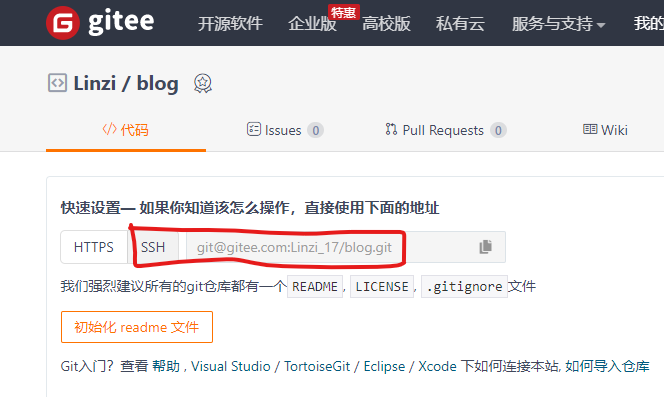
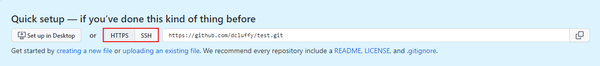

准备工作
在开始之前，建议先看看Hexo官方文档，已经写得非常详细了
2.下载安装 Node.js LTS版本
3.下载安装 Git
以下内容以Gitee为参考
安装
软件默认安装即可，建议之后的操作直接在Git Bash中完成，输入npm -v、node -v，看是否输出版本号，输出即安装成功

换源
如果后续安装失败或速度太慢，可以换npm仓库源
设置源地址：npm config set registry https://registry.npm.taobao.org/
新建仓库
Gitee新建仓库，仓库名建议与你的用户名一致，开源，分支模型master
配置Git
在Git Bash中键入以下命令
git config --global user.name "你的Gitee用户名"
git config --global user.email "你的Gitee注册邮箱"
随后键入ssh-keygen -t rsa -C "你的Gitee注册邮箱"，中间会要你输入密码，之后推送的时候就需要该密码，略显繁琐。建议直接回车即可，不要密码
生成之后，文件路径也会显示出来，打开对应路径就可看见
id_rsa文件是私钥，要保存好，放在本地，私钥可以生产公钥，反之不行
id_rsa.pub文件是公钥，可以用于发送到其他服务器，或者git上
用记事本之类的软件打开id_rsa.pub文件，并且复制全部内容。
打开Gitee设置-安全设置-SSH公钥，将刚才复制的内容粘贴进去，取个名字，点击确定即可
完成后键入ssh -T git@gitee.com进行测试，输入yes回车，成功的话会看见你的Gitee昵称和successfully字样
初始化Hexo
新建文件夹，用来放你的博客文件，进入文件夹后，空白处右键点击Git Bash Here，键入命令npm install hexo-cli -g安装Hexo，键入hexo init建立所需文件
命令简介：
hexo init [folder]新建一个网站。如果没有设置
folder，Hexo 默认在目前的文件夹建立网站。
hexo new [layout] <title>新建一篇文章。如果没有设置
layout的话，默认使用 _config.yml 中的default_layout参数代替。如果标题包含空格的话，请使用引号括起来。
hexo new "post title with whitespace"新建的文章位置：
博客根目录\source\_posts
hexo generate简写：
hexo g生成静态文件。
hexo server启动服务器。默认情况下，访问网址为：
http://localhost:4000/。
hexo deploy简写：
hexo d部署网站。
hexo clean清除缓存文件 (
db.json) 和已生成的静态文件 (public)。在某些情况（尤其是更换主题后），如果发现您对站点的更改无论如何也不生效，您可能需要运行该命令。
命令可以连在一起使用，格式如下：
hexo clean && hexo g && hexo s
本地配置
修改博客根目录下的_config.yml配置文件，加入以下内容：
1 | deploy: |

推送
接下来就可以开始推送了，但目前推送后要在Gitee Pages页面手动更新才行
npm install hexo-deployer-git --save
hexo clean && hexo g && hexo d
补充说明
GitHub添加公钥
点击头像——设置——SSH and GPG keys——New SSH key
添加完输入ssh -T git@github.com测试是否成功
如果失败，看下有没有开代理、加速器之类的，关掉再来
GitHub点击+号——new repository——username.github.io（注意格式）
一定要选Public，然后点击Create repository即创建成功

👆这里如前面说的在根目录配置文件改deploy内容，图中有https和ssh，repo后面写其中一个地址即可，https推送失败就改为ssh
推送之后访问https://username.github.io，如果404，在仓库的设置里——点击Pages——把Source（分支）和Theme Chooser（主题）两个设置一下，再访问一般就可以了
配置hexo搜索功能
在站点的根目录下执行以下命令：
npm install hexo-generator-searchdb --save
打开站点根目录的_config.yml文件，添加以下内容：
1 | search: |
这里以Next主题为例，还需打开Next主题配置文件hexo根目录\themes\next\_config.yml，启用本地搜索功能，搜索关键词，改为true即可
1 | local_search: |